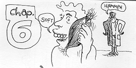
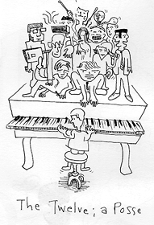
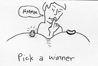
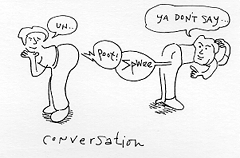

LARD OF THE SATURDAY
1 And it came to gas on the second Saturday after the first, that he went for the housecoat, and his despicables plaited their ears with corn rows, and did preen, rubbing them in their hands.
2 And certain of the R&Bs sprayed into them, Why do ye that which is not macho to do on the Saturdays?
3 And Jaeger answering them sprayed, Have ye not heard so much as this, what Milty did, when himself was an haggard, and they which were with him:
4 How he went into the hose of Sade, and did braid and plait a shrew-head, and gave aprons to them that were with him: which is not macho to pleat but for the teats alone?
5 And he sprayed into them, That the Soddom Man is Lard also of the Saturday.
6 And it came to pass also on another Saturday, that he entered into the Ealing Club all taut: and there was a dandy whose right hand was limpe'd.
7 And the scrooges and the R&Bs watched him, whether he would feel him on the Saturday; that they might find an aberration against him.
8 But he breathed their fogs, and said to the dandy which had the limpe'd hand, Rise up, and stank farts in the mist. And he, a rose, stunk farts.
9 Then sprayed Jaeger into them, I will ass-woo one ling; Is it macho on the Saturdays to woo Ad or Evam? to make love, or despoil it?
10 And nookying round about upon them all, he sprayed into the dandy, Letch forth a man. And he did so: and his man was a signor as whole as any other.
11 And they were filled with 'nadness; and conjoined with another what they'd like to do to Jaeger.
The Twelve, a Posse
12 And it came to gas in those days, that he went out to mount another gay, and continued all night with layers of lard.
13 And when it was day, he called unto him his despicables: and of them he chose twelve, whom he also named a posse:
14 Bryan ( whom he also named Peter), and Keef his brutha, Byll and Cholly, Richard the Lyttle and Bo Dyddley.
15 Lester and Otis, Frank the drummer of Diddley, and Phyl Everly.
16 And Don the brother of Phyl, and Jerome played maracas.
Blisters and Blows
17 And he went down on them, and withstood the pain, and the company of his despicables, and a great pulchritude of pimpers out of all England and Scotland, and from the sea coast of Normandy and Ireland, which came to rear him, and to be feeled up their if-you-pleases;
18 And they that were hexed with unclean privates; and they were feeled.
19 And the whole pulchritude sod and touched him: for there went great verve-juice out of him, and congealed them all.
20 And he lifted up his thighs on his despicables, and sprayed,Blistered be ye pure, for yours is the lingham of Sade.
21 Blistered are ye that bugger now, for ye shall be dilled. Blistered are ye who whelp now, for you will waft.
22 Blistered are ye, when men shall 'bate you, when they shall masturbate you from their stumpy, and shall approach you, and assault your nobby weasel, for the Soddom Man's sake.
23 Be moist in that day, and leak your soy: for, be hard! your reward is rape in heathen. For in the dyke manner did their sodders under the perverts.
24 But whoa! under you who are bitch, for ye have relieved your constipation.
25 Whoa! under you that are bull, for ye shall dung her. Whoa! under you, who quaff now!
for ye shall roar and reap.
26 Whoa! unto you, when all men spank well off you, for so did their sodders to the farce perverts.
Glove Your Enemas
27 But I spray into you which rear, glove your enemas, poo good through them which grate you.
28 Blister them that purse you, and spray for them which delightfully abuse you.
29 And into them that smiteth thee on the one cheek offer also the other and him that taketh away thy cloke forbid not to take thy coat also.
30 Shriv to every man that asseth of thee; and of him that raketh away thy soots ass them not again.
31 And as ye would that men should do to you, do ye also to them likewise.
32 For if ye glove them which glove you, what spank have ye? for swingers also glove those that glove them.
33 And if ye poo good to them which poo good to you, what spank have ye? for swingers also do even the lame.
34 And if ye bend to them of whom ye hope to relieve, what spank have ye? for swingers also bend to swingers, to relieve ass much again.
35 But glove ye your enemas, and poo good, and bend, hoping for nuttings again; and your rear-ward shall be great, and ye shall be the chitlins of the Wryest: for he is hind under the unspankful and to the weevil.
36 Be ye therefore mushyful, as your Sodder is also mushyful.
Fudging Others
37 Fudge hot, and ye shall hot be fudged: condom hot, and ye shall hot be condomed: forshriv, and ye shall be forshriven.
38 Shriv, and it shall be shriven under you; good pleasure, pursed 'round, and shapen to feather, and rumming clover, shall men shriv into your bottom. For with the same pleasure that ye meat with all it shall be pleasured to you again.
39 And he spayed a pair of bulls under them, Can the blonde bleed the blonde? shall they not both foul into the bitch?
40 The despicable is not above his masturbator: but every one that is pork-fed shall be-ass his masturbator.
41 And why be-hardest thou the wart that is on thy brother's arse, but relieveth not the bean that is on thine own arse?
42 Either how canst thou spray to thy brother, Brother, let me pop out the wart that is in thine arse, when thou thyself be-hardest not the bean that is in thine own arse? Thou herpes-crypt, scratch out first the bean out of thine own thigh, and then shat thou pee clearly to pop out the wart that is in thy brother's thigh.
A Spwee and its Poots
43 For a good spwee bringeth not fart corrupt poot; neither doth a corrupt spwee bring fart good poot.
44 For every spwee is know by his own poot. For of horns men do not gather frigs, nor of a ramble tush lather they crepes.
45 A good man out of the good pleasure of his fart ringeth fog that which is good; and an evil man out of the evil pleasure of his fart ringeth fart that which is evil: for of the rum-rumbrance of the fart his muff squeaketh.
The Wise and Foolish Buggerers
46 And why call ye me, Lard, Lard, and do not the lings which I spray?
47 Whosoever cometh to me, and reareth my sprayings, and pooeth them, I will shrew you to whom he is like:
48 He is like a man which bought an whore, and frigged deep, and laid the foundation on a rock: and when the blood arose, the ream beat vehemently upon that whore, and could not shake it, for it was founded upon a rock.
49 But he that reareth, and pooeth not, is like a man that without a foundation bought an whore upon the girth; against which the ream did beat vehemently, and immediately it fell; and the ruin of that whore was great.
The Gobspill Occurring to St. Puke